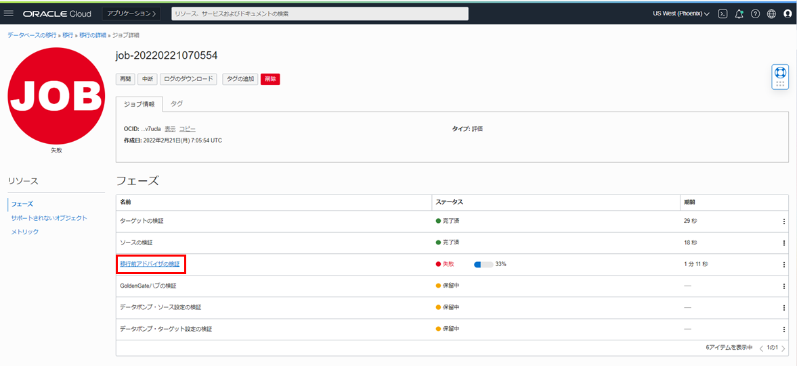

はじめに
Oracle Cloud Infrastructure Database Migration Service (DMS) は、オンプレミスまたはOCI上のOracle DatabaseからAutonomous Databaseに移行する際に利用できるマネージド・サービスです。エンタープライズ向けの強力なオラクル・ツール(Zero Downtime Migration、GoldenGate、Data Pump)をベースとしています。
DMSでは下記の2つの論理的移行が可能です。
- オフライン移行 - ソース・データベースのポイント・イン・タイム・コピーがターゲット・データベースに作成されます。移行中のソース・データベースへの変更はコピーされないため、移行中はアプリケーションをオフラインのままにする必要があります。
- オンライン移行 - ソース・データベースのポイント・イン・タイム・コピーがターゲット・データベースに作成されるのに加え、内部的にOracle GoldenGateによるレプリケーションを利用しているため、移行中のソース・データベースへの変更も全てコピーされます。そのため、アプリケーションをオンラインのまま移行を行うことが可能で、移行に伴うアプリケーションのダウンタイムを極小化することができます。
DMSに関するチュートリアルは304 : OCI Database Migration Serviceを使用したデータベース移行の前準備、305 : OCI Database Migration Serviceを使用したデータベースのオフライン移行、306 : OCI Database Migration Serviceを使用したデータベースのオンライン移行の計3章を含めた3部構成となっています。 DMSを使用してBaseDBで作成したソース・データベースからADBのターゲット・データベースにデータ移行を行います。
305 : OCI Database Migration Serviceを使用したデータベースのオフライン移行または306 : OCI Database Migration Serviceを使用したデータベースのオンライン移行を実施する前に必ず304 : OCI Database Migration Serviceを使用したデータベース移行の前準備を実施するようにしてください。
この章では、DMSを使用したデータベースのオンライン移行について紹介します。
目次 :
- 1. Oracle GoldenGate Microservicesのインストール
- 2. Oracle Goldengate Microservicesインスタンスの設定
- 3. ソース・データベースの設定
- 4. ターゲット・データベースの設定
- 5. 移行の作成
- 6. 移行の検証
- 7. 初期移行
- 8. Oracle GoldenGateのレプリケーションの検証
- 9. スイッチオーバー
- 10. クリーンアップ
前提条件 :
- 「304 : OCI Database Migration Serviceを使用したデータベース移行の前準備」を参考に、データベース移行の前準備が完了していること。
- オンライン移行を実行する場合、Oracle GoldenGateの必須パッチ、推奨パッチが適用されている必要があります。Oracle Database 11g(11.2.0.4)用の必須パッチ、推奨パッチに関するドキュメント「Oracle GoldenGate – Oracle RDBMS Server Recommended Patches (Doc ID 1557031.1)」および、Oracle Datbase 12c以降のバージョンの必須パッチ、推奨パッチに関するドキュメント「Latest GoldenGate/Database (OGG/RDBMS) Patch recommendations (Doc ID 2193391.1)」を参考に適宜パッチの確認と適用を実施してください。
- ターゲット・データベースのタイムゾーン・バージョンがソース・データベースのタイムゾーン・バージョンよりも最新になっていることを確認する(SELECT * FROM V$TIMEZONE_FILE;)。ターゲット・データベースのタイムゾーン・バージョンの方が古い場合はSRをあげる必要があります。
- レプリケーション用にOCI GoldenGateサービスを使用する(デフォルト)場合は、本記事の1.と2.の手順をスキップしてください。OCI GoldenGateサービスを使用する方法を推奨します。DMSとOCI GoldenGateサービスの統合に関しては、OCI Database MigrationサービスがOCI GoldenGate統合を発表をご参照ください。
所要時間 : 約40分
1. Oracle GoldenGate Microservicesのインストール
-
OCIコンソール・メニューから マーケットプレイス → マーケットプレイス に移動します。

-
検索バーに Oracle GoldenGate と入力し、Oracle GoldenGate for Oracle - Database Migrations をクリックします。

-
任意の バージョン と コンパートメント を選択し、Oracle使用条件を確認した上でこれに同意します。 にチェックを付け、スタックの起動 をクリックします。

- スタック情報 の各項目は以下のように設定します。その他の設定はデフォルトのままにします。
- 名前 - 任意
設定後、次 をクリックします。
- 変数の構成 の各項目は以下のように設定します。
- Name for New Resources -
- Display Name - 任意
- Host DNS Name - デフォルト
- Network Settings -
- VCN Network Compartment - 使用したいVCNが配置されているコンパートメントを選択します。
- VCN - 使用したいVCNを選択します。
- Subnet Network Compartment - 使用したいサブネットが配置されているコンパートメントを選択します。
- Subnet - 使用したいサブネットを選択します。（本チュートリアルではパブリック・サブネットを選択します。）
- Instance Settings
- Availability Domain - インスタンスを配置するADを選択します。
- Compute Shape - インスタンスのコンピュート・シェイプを選択します。
- Assign Public IP にチェックを付けます。
- Create OGG Deployments
- Deployment 1 - Name - 任意
- Deployment 1 - Database - ソース・データベースと同じデータベースのバージョンを選択します。
- Deployment 2 - Name - 任意
- Deployment 2 - Database - ターゲット・データベースと同じデータベースのバージョンを選択します。
- Deployment 2 - Autonomous Database にチェックを付けます。
- Deployment 2 - Autonomous Database Compartment - ターゲットADBが配置されているコンパートメントを選択します。
- Deployment 2 - Autonomous Database Instance - ターゲット・データベースのインスタンスを選択します。
- Shell Access
- SSH Public Key - ssh公開鍵を貼り付けます。
設定後、次をクリックします。

- Name for New Resources -
-
確認 画面で全ての項目が正しく設定できているか確認します。
確認後、作成されたスタックで適用を実行しますか。 の 適用の実行 にチェックを付け、作成 をクリックします。
2. Oracle GoldenGate Microservicesの設定
-
OCIコンソール・メニューから コンピュート → インスタンス に移動します。

-
Oracle Goldengate Microservicesインスタンスが作成されていることを確認し、Tera Termなどのsshクライアントでインスタンスに接続します。

-
TLS認証用の証明書を含むウォレットが
/u02/deployments/deployment_name/etc/adbディレクトリに配置されていることを確認します。（deployment_nameは1. Oracle GoldenGate Microservicesのインストールの5.で設定したターゲット・データベースのデプロイメント名です。）例：
コマンド
cd /u02/deployments/Target/etc/adb ls実行結果

lsコマンドで、上の例のようなファイルが存在していればOKです。
-
Oracle Goldengate Microservicesインスタンスの
/home/opc/ディレクトリにあるoggadminユーザとそのパスワード資格証明を表示して、コピーしてメモ帳に貼り付けます。cat /home/opc/ogg-credentials.json※ パスワードを変更したい場合は下記の5.~17.の手順に従って変更をしてください。デフォルトのままでもよい場合はスキップしても構いません。
-
ブラウザのアドレスバーに以下の情報を入力し、Enterキーを押します。（public_IP_addressはOracle Goldengate MicroservicesインスタンスのパブリックIPアドレスです。）
https://<public_IP_address> -
Oracle GoldenGate Service Manager にログインします。（User NameとPasswordは4.でコピーしたデフォルトのものを使用します。）

-
左上のハンバーガー・メニューをクリックし、Administrator をクリックします。
-
oggadmin の Action の鉛筆のアイコンをクリックします。

-
新規パスワードを設定し、Submit をクリックします。（パスワードは任意のもので構いません。）
-
パスワード変更が成功すると Success ダイアログが表示されます。OK をクリックしてサインアウトします。設定したパスワードを使用してログインします。

-
Services の一覧にあるソース・データベースの Deployment の Administration Server の Port 番号をクリックします。

-
Oracle GoldenGate Administration Server にログインします。（usernameとPasswordは4.でコピーしたデフォルトのものを使用します。）

-
左上のハンバーガー・メニューをクリックし、Administrator をクリックします。
-
oggadmin の Action の鉛筆のアイコンをクリックします。
-
新規パスワードを設定し、Submit をクリックします。（パスワードは任意のもので構いません。）
-
パスワード変更が成功すると Success ダイアログが表示されます。OK をクリックしてサインアウトします。設定したパスワードを使用してログインします。
-
Oracle GoldenGate Service Manager に戻り、11.~16.と同様の手順でターゲット・データベースの Deployment のAdministration Serverのパスワードを変更します。
3. ソース・データベースの設定
データベースの事前設定は、データベース準備ユーティリティによって生成されたスクリプトを実行する方法(推奨)と、手動でSQLコマンドを実行する方法があります。前者の場合は3-a.、後者の場合は3-b.に従ってそれぞれ実施してください。
3-a. データベース準備ユーティリティを使用した設定方法
- OCI Database Migration Service - Download & Use Database Preparation Utility to Prepare Your Databases for Migration (Doc ID 2953866.1)を参考にデータベースの事前設定を実施してください。
設定完了後、4. ターゲット・データベースの設定に進んでください。
3-b. 手動で実行する設定方法
BaseDBにあるソース・データベースに対して以下の設定を行います。2.~5.の設定は全てCDB上で行います。
-
GoldenGate管理者ユーザの作成
ソース・データベースにGG管理者ユーザを作成し、必要な権限を付与します。マルチテナント構成の場合、PDBとCDB rootのそれぞれにGG管理者ユーザを作成する必要があります。 Tera Termなどのsshクライアントでソース・データベースに接続して以下を実行してください。
oracleユーザに切り替えます。
sudo su oraclesysユーザでSQL*Plusに接続します。
sqlplus / as sysdbaCDB rootでGG管理者ユーザc##ggadminを作成し、必要な権限を付与します。（passwordに任意のパスワードを入力します。）
CREATE USER c##ggadmin IDENTIFIED BY <password> DEFAULT TABLESPACE users TEMPORARY TABLESPACE temp; ALTER USER c##ggadmin QUOTA 100M ON USERS; GRANT UNLIMITED TABLESPACE TO c##ggadmin; GRANT CONNECT, RESOURCE TO c##ggadmin container=all; GRANT SELECT ANY DICTIONARY TO C##GGADMIN container=all; GRANT CREATE VIEW TO C##GGADMIN container=all; GRANT EXECUTE ON dbms_lock TO c##ggadmin container=all; EXEC dbms_goldengate_auth.GRANT_ADMIN_PRIVILEGE('c##ggadmin',container=>'all');PDBに接続します。
alter session set container = PDB;PDBでGG管理者ユーザggadminを作成し、必要な権限を付与します。（passwordに任意のパスワードを入力します。）
CREATE USER ggadmin IDENTIFIED BY <password> DEFAULT TABLESPACE users TEMPORARY TABLESPACE temp; ALTER USER ggadmin QUOTA 100M ON USERS; GRANT UNLIMITED TABLESPACE TO ggadmin; GRANT CONNECT, RESOURCE TO ggadmin; GRANT SELECT ANY DICTIONARY TO GGADMIN; GRANT CREATE VIEW TO GGADMIN; GRANT EXECUTE ON dbms_lock TO ggadmin; EXEC dbms_goldengate_auth.GRANT_ADMIN_PRIVILEGE('ggadmin'); -
GLOBAL_NAMESパラメータの設定
GLOBAL_NAMESパラメータがfalseに設定されていることを確認します。SQL*Plusで以下を実行します。
show parameter globaltrueに設定されている場合、以下を実行して変更します。
ALTER SYSTEM SET GLOBAL_NAMES=false; -
ARCHIVELOGの設定
ARCHIVELOGを有効にする必要があります。
ARCHIVELOGが有効になっているか確認します。SQL*Plusで以下を実行します。
ARCHIVE LOG LIST返される出力例：
Database log mode Archive log Mode Automatic archival Enabled Archive destination USE_DB_RECOVERY_FILE_DEST Oldest online log sequence 33 Next log sequence to archive 35 Current log sequence 35無効(Disabled)の場合、以下を実行して有効にします。
SHUTDOWN IMMEDIATE STARTUP MOUNT ALTER DATABASE archivelog; ALTER DATABASE open; -
ロギングの設定
ロギングを有効にする必要があります。
ロギングが有効になっているか確認します。SQL*Plusで以下を実行します。
SELECT supplemental_log_data_min, force_logging FROM v$database;無効の場合、以下を実行して有効にします。
ALTER DATABASE ADD SUPPLEMENTAL LOG DATA; ALTER DATABASE FORCE LOGGING; -
GoldenGateレプリケーションの設定
GoldenGateレプリケーションを有効にします。SQL*Plusで以下を実行します。
ALTER SYSTEM SET ENABLE_GOLDENGATE_REPLICATION=TRUE SCOPE=BOTH; -
ソース・データベースへのサンプル・データの追加
PDB上のスキーマに接続します。スキーマがない場合は検証用のスキーマを作成してください。また、305 : OCI Database Migration Serviceを使用したデータベースのオフライン移行のチュートリアルを実施済みの場合、使用したスキーマとは別のスキーマを使用してください。SQL*Plusを利用する場合は、以下のようにホスト名、ポート番号、サービス名を指定します。
例：（$ sqlplus <スキーマ名>/<パスワード>@<ホスト名>:<ポート>/<サービス名>）
sqlplus testuser2/WelCome123#123#@dbcs01.subnet.vcn.oraclevcn.com:1521/pdb1.subnet.vcn.oraclevcn.comサンプル・データを追加します。
CREATE TABLE PERSONS ( PersonID int, LastName varchar(255), FirstName varchar(255), Address varchar(255), City varchar(255) ); INSERT INTO PERSONS (PersonID, LastName, FirstName, Address, City) Values ('1', 'Brady', 'Josh', '456way', 'Dallas'); commit;exit;
4. ターゲット・データベースの設定
-
OCIコンソール・メニューから コンピュート → インスタンス に移動します。
-
Oracle Goldengate MicroservicesインスタンスにTera Termなどのsshクライアントで接続します。
-
環境変数TNS_ADMINとORACLE_HOMEを設定します。（depoyment_nameは1. Oracle GoldenGate Microservicesのインストールの5.で設定したターゲット・データベースのデプロイメント名です。）
export TNS_ADMIN=/u02/deployments/deployment_name/etc export ORACLE_HOME=/u01/app/client/oracle19 -
adminとしてターゲット・データベースに接続します。（ADW_passwordはADWの管理者パスワードです。ADW_nameは
/u02/deployments/Target/etcディレクトリにあるtnsnames.oraで確認できます（例：targetatp1_high）。）$ORACLE_HOME/bin/sqlplus admin/ADW_password@ADW_name -
GoldenGate管理者ユーザ（ggadmin）のロックを解除します。（ggadmin_passwordは任意）
ALTER USER ggadmin IDENTIFIED BY ggadmin_password ACCOUNT UNLOCK; -
ggadminにログインしてロックが解除されていることを確認します。
$ORACLE_HOME/bin/sqlplus ggadmin/ADW_password@ADW_name -
GLOBAL_NAMESパラメータの設定
adminとしてターゲットデータベースに接続します。
$ORACLE_HOME/bin/sqlplus admin/ADW_password@ADW_nameGLOBAL_NAMESパラメータがfalseに設定されていることを確認します。
show parameter globaltrueに設定されている場合、以下を実行して変更します。
ALTER SYSTEM SET GLOBAL_NAMES=false;exit
5. 移行の作成
-
OCIコンソール・メニューから 移行 → 移行 に移動します。
-
移行の作成 を選択します。

- 詳細の追加 の各項目は以下のように設定します。その他の入力項目はデフォルトのままにします。
- 名前 - 任意 ※名前にスペースを含めると移行の作成に失敗します。
設定後、Next をクリックします。
- データベースの選択 の各項目は以下のように設定します。
- ソース・データベース
- データベース接続 - 登録済みのソース・データベース（PDB）を選択します。
- データベースはプラガブル・データベース(PDB)です にチェックを付けます。
- コンテナ・データベース接続 - 登録済みのソース・データベース（CDB）を選択します。
- ターゲット・データベース
- データベース接続 - 登録済みのターゲット・データベースを選択します。
設定後、Next をクリックします。
- ソース・データベース
- 移行オプション の各項目は以下のように設定します。
- 初期ロード用の転送メディア - オブジェクト・ストレージ経由のデータポンプを選択します。
- ソース・データベース -
- エクスポート・ディレクトリ・オブジェクト名 - 任意
- エクスポート・ディレクトリ・オブジェクト・パス - 任意
- オブジェクト・ストレージ・バケット - 使用したいオブジェクト・ストレージ・バケットを選択します。
- オンライン・レプリケーションの使用 にチェックを付けます。
OCI GoldenGateサービスを使用する場合は、作成をクリックし、8.に進みます。Marketplace GoldenGateインスタンスを使用する場合は、6.に進みます。
-
Show advanced optionsをクリックし、レプリケーションタブをクリックします。

- スクロールダウンし、Marketplace GoldenGateインスタンスの使用にチェックを付け、各項目を以下のように設定します。
- GoldenGateインスタンスOCID - 1. Oracle GoldenGate Microservicesのインストールで作成したGoldenGateインスタンスのOCID
- GoldenGateハブURL - https://
- GoldenGate管理者ユーザー名 - 2. Oracle Goldengate Microservicesインスタンスの設定で設定したユーザー名（デフォルトはoggadmin）
- GoldenGate管理者パスワード - 2. Oracle Goldengate Microservicesインスタンスの設定で設定したパスワード（デフォルトは
/home/opc/ogg-credentials.jsonを参照） - GoldenGateデプロイメント名 - 1. Oracle GoldenGate Microservicesのインストールの5.で設定したソース・データベースのデプロイメント名
- ボールト - 登録済みデータベース に登録されているボールトを選択します。
- 暗号化キー - 登録済みデータベース に登録されている暗号化キーを選択します。
設定後、作成 をクリックします。
-
作成した移行の状態が アクティブ になるまで待ちます。（3分ほどかかります。）
これで移行の作成は完了です。
6. 移行の検証
-
OCIコンソール・メニューから 移行 → 移行 に移動します。
-
検証する移行の名前をクリックします。（5. 移行の作成で作成した移行）

-
検証 ボタンをクリックすると 移行の検証 ダイアログが表示されます。 検証 をクリックします。


-
リソース の一覧にある ジョブ をクリックし、実行中のジョブの名前をクリックします。

-
リソース の一覧にある フェーズ をクリックします。ここで実行中の検証のフェーズが確認できます。

-
検証が失敗した場合、フェーズ の ステータス に失敗 と表示されます。その場合、 ログのダウンロード ボタンをクリックしてログを参照することで、失敗の詳細を確認することができます。もう一度実行したい場合は、 中断 ボタンをクリックして検証を再度やり直してください。

移行前アドバイザの検証 で失敗した場合、フェーズ の 移行前アドバイザの検証 をクリックし、アドバイザ・レポートのダウンロード をクリックすることでCPAT (Cloud Premigration Advisor Tool)の結果を閲覧することができます。
CPATには次のような利点があります。
- ターゲット環境でサポートされていないデータベースで使用されている機能について警告します。
- データ・ポンプのエクスポートおよびインポート操作に使用する修復変更やパラメータ(あるいはその両方)に関する提案を作成します。
詳細については、Oracle Cloud Infrastructure Database移行サービスの使用 - 4 移行の管理 - 検証オプションの構成 をご参照ください。


-
全ての フェーズ の ステータス が 完了済 と表示されたら、移行の検証は完了です。
7. 初期移行の実行
-
OCIコンソール・メニューから 移行 → 移行 に移動します。
-
実行する移行の名前をクリックします。（5. 移行の作成で作成した移行）
-
起動 ボタンをクリックします。

-
移行の開始 ダイアログが表示されます。続行する前にフェーズ後にユーザー入力が必要 にチェックを付けると、選択したフェーズの後に一時停止をするように設定できます。チェックを付けて、レプリケーション・ラグのモニター を選択します。
このフェーズの後に停止させることによって8. Oracle GoldenGateのレプリケーションの検証で行うOracle GoldenGateによるデータの伝播を確認することができます。以下の処理まで実行されます。
- 移行に使用されるソース・データベース、ターゲット・データベース、GoldenGate、データ・ポンプのそれぞれの検証と準備
- オブジェクト・ストレージとデータ・ポンプを使用したデータのエクスポートとインポート
- Oracle GoldenGateのレプリケーションの開始
選択後、起動 をクリックします。

-
リソース の一覧にある ジョブ をクリックし、実行中のジョブの名前をクリックします。

-
リソース の一覧にある フェーズ をクリックします。ここで実行中の移行のフェーズが確認できます。
OCI GoldenGateサービスを使用した場合は、最初のフェーズでレプリケーション・インフラストラクチャの初期化が実行され、OCI GoldenGateのプロビジョニングが内部的に実行されます。

-
移行が失敗した場合、フェーズ の ステータス に失敗 と表示されます。その場合、 ログのダウンロード ボタンをクリックしてログを参照することで、失敗の詳細を確認することができます。もう一度実行したい場合は、 中断 ボタンをクリックして移行を再度やり直してください。

-
レプリケーション・ラグのモニター までの ステータス が 完了済 になると移行が一時停止します。
続いて、初期移行データがソースPDBからターゲットADBに正常に移行されているか確認します。
-
OCIコンソール・メニューから Oracle Database → Autonomous Database に移動します。
-
移行に使用したターゲット・データベースの表示名をクリックします。
-
データベース・アクション ボタンをクリックします。
-
SQL をクリックします。

-
画面左にあるナビゲーターでソースPDBで作成したサンプル・データが格納されているスキーマがあることを確認し、選択します。

-
ワークシートで以下のSQL文を実行します。
SELECT PERSONID, LASTNAME, FIRSTNAME, ADDRESS, CITY FROM TESTUSER2.PERSONS;
DMSのオブジェクト・ストレージとデータ・ポンプを使用した移行メソッドによって、3. ソース・データベースの設定の6.で作成したサンプル・データがターゲットADBに移行されていることが確認できました。
8. Oracle GoldenGateのレプリケーションの検証
-
Oracle GoldenGateのレプリケーションを検証するため、ソースPDBに更新データを追加します。
3. ソース・データベースの設定の6.で作成したサンプル・データの表に新たにデータを追加します。
INSERT INTO PERSONS (PersonID, LastName, FirstName, Address, City) Values ('2', 'Munden', 'Mike', '789way', 'Miami'); commit;exit; -
Oracle GoldenGateのレプリケーションによって、更新データがターゲットADBに伝播されているか確認をします。
7. 初期移行の実行の9.と同じ手順で確認します。
Oracle GoldenGateのレプリケーションによって、更新データがターゲットADBに伝播されていることが確認できました。
9. スイッチオーバーの実行
スイッチオーバーを実行します。このフェーズでは以下の処理が実行されます。
- GoldenGate Extractの停止
- GoldenGate Replicatの適用が完了してから停止
以下の手順で行います。
-
一時停止中のジョブの ジョブ詳細 ページに戻り、再開 ボタンをクリックします。
-
ジョブの再開 ダイアログが表示されます。続行する前にフェーズ後にユーザー入力が必要 にチェックを付けると、選択したフェーズの後に一時停止をするように設定できます。チェックを付けて、スイッチオーバー を選択します。選択後、再開 をクリックします。


-
スイッチオーバー の ステータス が 完了済 になると移行が一時停止します。

これでスイッチオーバーは完了です。
10. クリーンアップの実行
クリーンアップを実行します。このフェーズでは以下の処理が実行されます。
- GoldenGateのExtract,Replicatプロセスの削除
- ソースデータベースのサプリメンタルロギングの無効化
- ハートビート表、チェックポイント表の削除
-
一時停止中のジョブの ジョブ詳細 ページに戻り、再開 ボタンをクリックします

-
ジョブの再開 ダイアログが表示されます。続行する前にフェーズ後にユーザー入力が必要 にはチェックを付けずに 再開 をクリックします。

-
クリーンアップ の ステータス が 完了済 と表示されたら、完了です。
以上で DMSを使用したデータベースのオンライン移行 は終了です。
参考資料
- Oracle Cloud Infrastructure Database移行サービスの使用
- OCI Database Migration Workshop
- Oracle Cloud Marketplace上でのOracle GoldenGateの使用